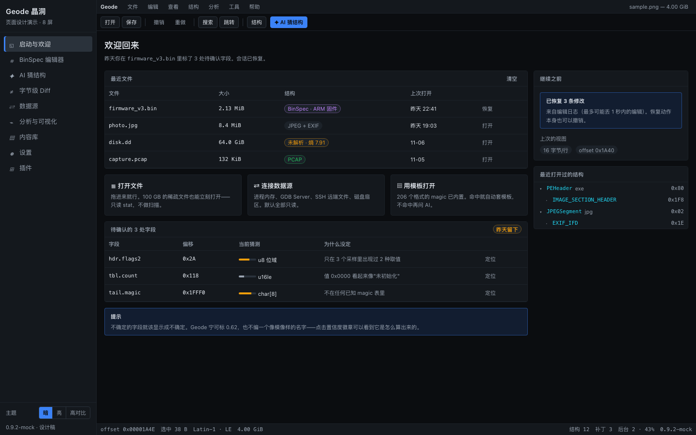
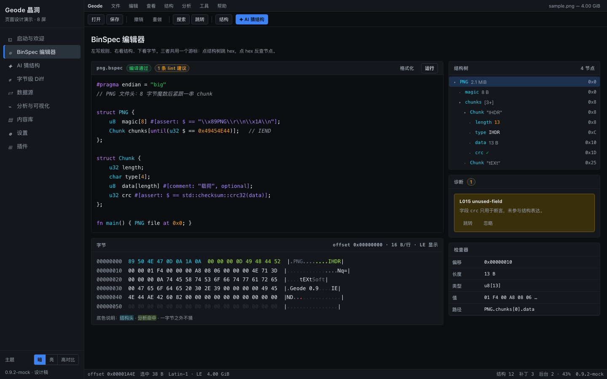
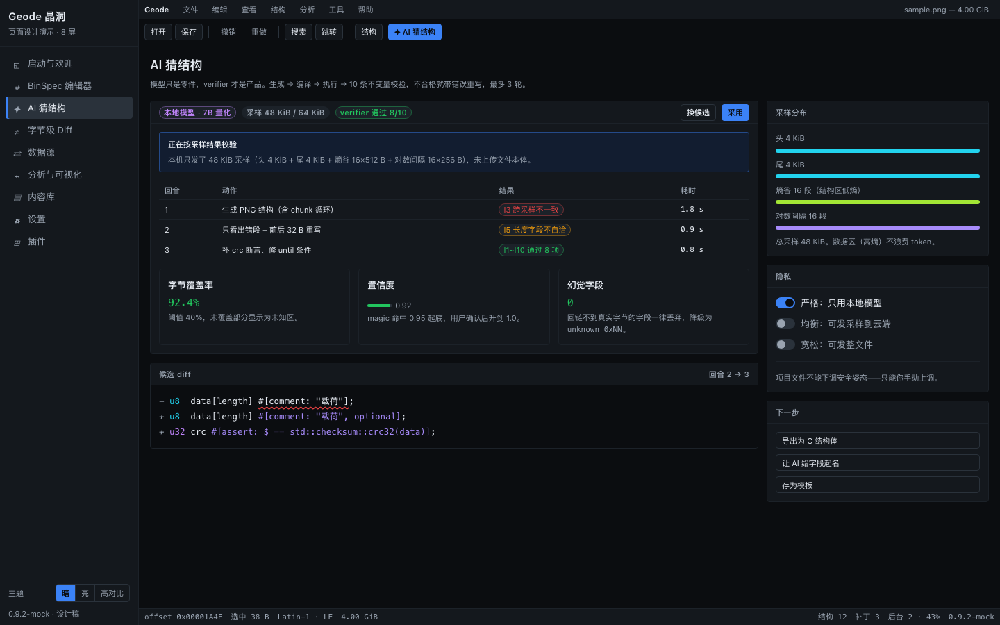
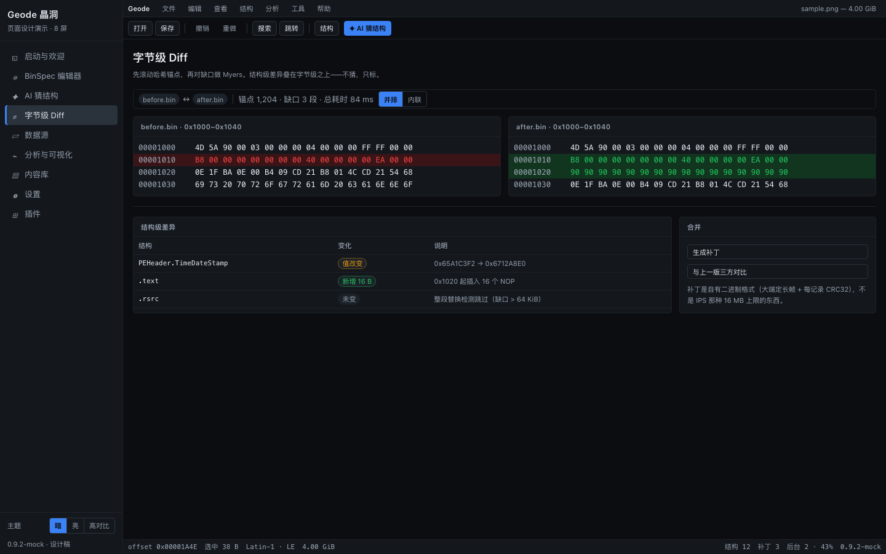
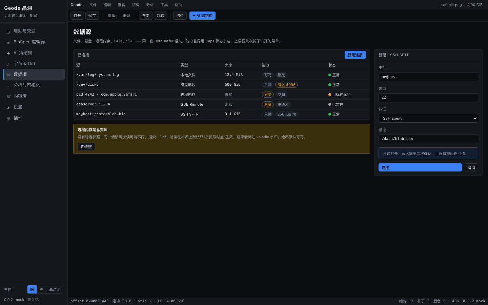
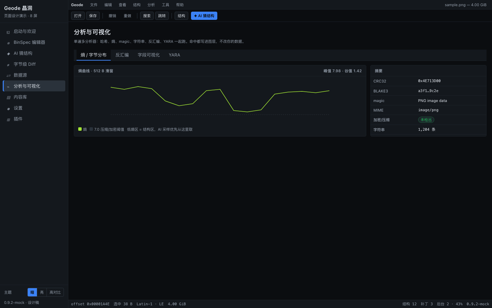
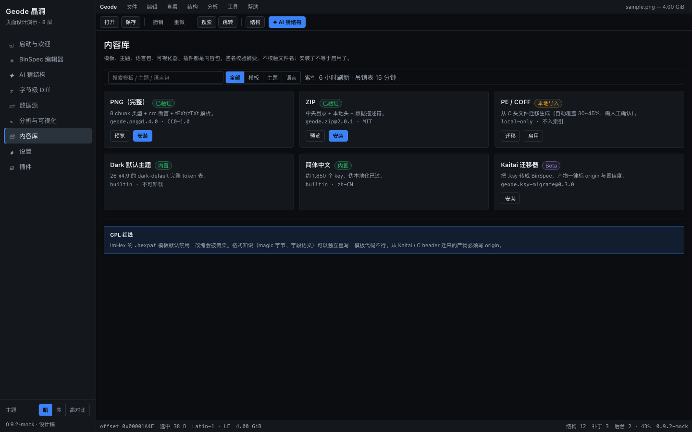
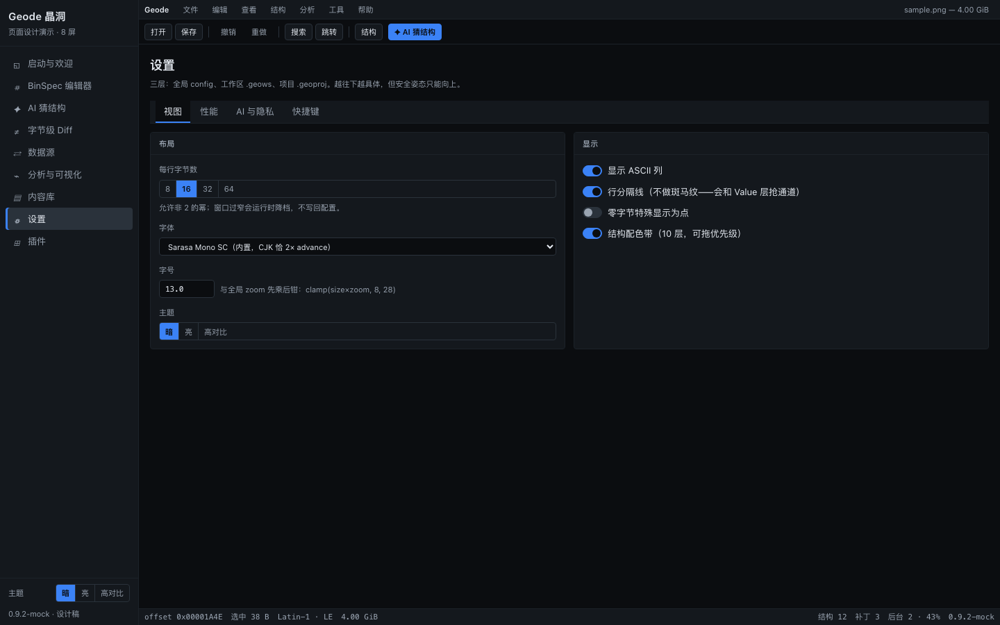
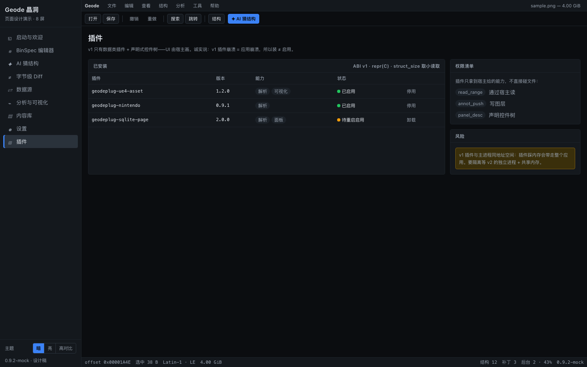

所有页面都在一个文件里：demo.html（双击即开，零外链，断网可用）。左侧栏切换屏幕，左下角切主题，
每条交互都做成可点的样子——但数据是写死的示例。缩略图由 headless Chrome 实际渲染，不是手绘。
docs/26-visual-design.md；
三栏布局、命令注册表、主题三层 token → docs/16-ui-shell-theme-i18n.md；
旅程与文案（只读降级优先于拒绝打开、模态只留给安全事件）→ docs/25-ux-flows-and-copy.md；
AI 侧的 verifier / 置信度 / 采样 → docs/03-ai-dsl-generation.md；
diff 先锚点后 Myers → docs/09-diff-subsystem.md。









| 你要做的事 | 看哪 |
|---|---|
| 写 geode-ui 的布局 | demo.html 的 .rail / .menubar / .toolbar / .statusbar 尺寸：200 / 28 / 36 / 24 px，圆角 4，间距全部 4 的倍数 |
| 实现组件 | .btn（四种）、.tabs、.panel、.kv、.tree、.banner（三种）、.badge、.conf（置信度）、.seg、.sw——全部只用 semantic token，没有一处硬编码颜色 |
| 对像素 | 配色取 docs/26-visual-design.md §4.9 的表；本稿与表一致（dark 的 hex.null-byte / ascii-nonprint 用的是修正后的暗淡档） |
| 找交互边界 | 点所有按钮都会弹一句"演示稿：…"，那句话就是在说真实实现该做什么，以及对应哪份文档的哪一节 |
| 看主视图细节 | ../mockup.html——那一份带 canvas 自绘的 hex 网格、虚拟滚动、比例尺滚动条，是像素级靶子 |
04 / 17）。16 §4.6，本稿没接。05 §6 的降级梯度走）。